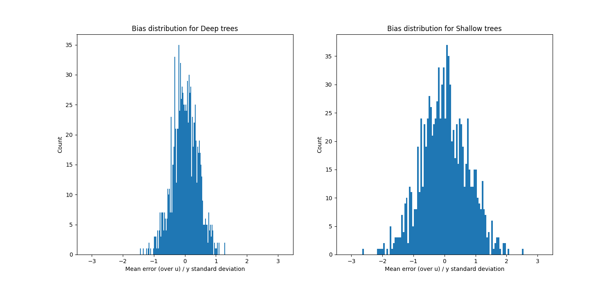
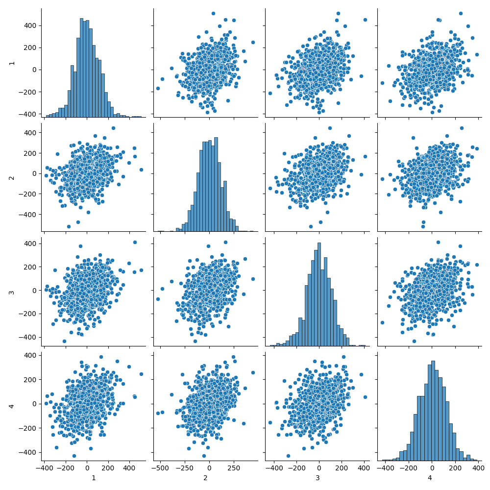

Bagging and boosting
Goals
Introduce the first of black–box modifications of a “weak learner”:
- Introduce bagging
- Intuitively for high–variance, low bias procedures
- Bootstrap
- Averaging the bootstrap
- Decorrelating the trees (random forests)
Reading
The primary reading is Gareth et al. (2021) 8.2. The reading in Hastie et al. (2009) section 8.7 may also be useful. These notes are intended only as a supplement to the primary reading.
The bias–variance decomposition for squared error loss
Suppose we think of our estimator \(\hat{f}(\cdot)\) as random. This randomness could come from many different places.
- The randomness could come from the training data itself if we want to ask how our estimator changes under new draws of the training data from the same distribution,
- It could come from the statistical procedure itself, as in stochastic gradient descent or randomized folds in cross validation, or
- We could deliberatly add randomness to the estimator to achieve a desired effect.
You might wonder why you’d add randomness, but that’s the fundamental idea of today’s lecture.
In any case, let’s just suppose that, whatever is random in our estimation procedure can be captured in a random variable \(u\), writing \(\hat{f}_u(\cdot)\). That is, \(u\) has a probability distribution \(p(u)\), and for each random draw of \(u\) we get a single estimate \(\hat{f}_u(\cdot)\).
Squared loss for random estimators has a convenient decomposition known as the bias-variance tradeoff. Recall that \(f^{\star}(x) = \mathbb{E}_{p(y\vert x)}\left[y\right]\), and note that, for any \(u\),
\[ \begin{aligned} \mathscr{R}(\hat{f}_u) ={}& \mathbb{E}_{p(\boldsymbol{x},y)}\left[\left(\hat{f}_u(x) - y\right)^2\right] \\={}& \mathbb{E}_{p(\boldsymbol{x},y)}\left[\left(\hat{f}_u(x) - f^{\star}(x) + f^{\star}(x) - y\right)^2\right] \\={}& \mathbb{E}_{p(\boldsymbol{x},y)}\left[\left(\hat{f}_u(x) - f^{\star}(x)\right)^2\right] + \mathbb{E}_{p(\boldsymbol{x},y)}\left[\left(y- f^{\star}(x)\right)^2\right] + \\&\quad 2 \mathbb{E}_{p(\boldsymbol{x})}\left[ \left( \hat{f}_u(x) - f^{\star}(x) \right) \underbrace{ \mathbb{E}_{p(y\vert x)}\left[ \left(y- f^{\star}(x) \right) \right] }_{\textrm{Zero}} \right] \\={}& \mathbb{E}_{p(\boldsymbol{x},y)}\left[\left(\hat{f}_u(x) - f^{\star}(x)\right)^2\right] + \underbrace{ \mathbb{E}_{p(\boldsymbol{x},y)}\left[\left(y- f^{\star}(x)\right)^2\right] }_{\textrm{Irreducible risk $\mathscr{R}(f^{\star})$}} \end{aligned} \]
Then, applying the same trick, for any \(x,y\), the first term decomposes as
\[ \begin{aligned} \mathbb{E}_{p(u)}\left[\left(\hat{f}_u(x) - f^{\star}(x)\right)^2\right] ={}& \mathbb{E}_{p(u)}\left[\left(\hat{f}_u(x) - \mathbb{E}_{p(u)}\left[\hat{f}_u(x)\right]{} + \mathbb{E}_{p(u)}\left[\hat{f}_u(x)\right]{} - f^{\star}(x) \right)^2\right] \\={}& \mathbb{E}_{p(u)}\left[\left(\hat{f}_u(x) - \mathbb{E}_{p(u)}\left[\hat{f}_u(x)\right]{}\right)^2\right] + \mathbb{E}_{p(u)}\left[\left(f^{\star}(x) - \mathbb{E}_{p(u)}\left[\hat{f}_u(x)\right]{}\right)^2\right] + \\&\quad 2 \left( y- \mathbb{E}_{p(u)}\left[\hat{f}_u(x)\right]{} \right) \underbrace{ \mathbb{E}_{p(u)}\left[ \left(\hat{f}_u(x) - \mathbb{E}_{p(u)}\left[\hat{f}_u(x)\right]{} \right) \right] }_{\textrm{Zero}} \\={}& \underbrace{\mathbb{E}_{p(u)}\left[\left(\hat{f}_u(x) - \mathbb{E}_{p(u)}\left[\hat{f}_u(x)\right]{}\right)^2\right]}_{\textrm{Variance of $\hat{f}_u(x)$}} + \underbrace{\mathbb{E}_{p(u)}\left[\left(f^{\star}(x) - \mathbb{E}_{p(u)}\left[\hat{f}_u(x)\right]{}\right)^2\right] }_{\textrm{Squared bias of $\hat{f}_u(x)$}}. \end{aligned} \]
Letting \[ \begin{aligned} V\left(x; \hat{f}_u\right) :={}& \mathbb{E}_{p(u)}\left[\left(\hat{f}_u(x) - \mathbb{E}_{p(u)}\left[\hat{f}_u(x)\right]{}\right)^2\right] \\ B\left(x; \hat{f}_u\right) :={}& \mathbb{E}_{p(u)}\left[\left(f^{\star}(x) - \mathbb{E}_{p(u)}\left[\hat{f}_u(x)\right]{}\right)^2\right], \end{aligned} \] we have shown that \[ \mathbb{E}_{p(u)}\left[\mathscr{R}(\hat{f}_u)\right] = \underbrace{\mathbb{E}_{p(x,y)}\left[V\left(x; \hat{f}_u\right)\right]}_{\textrm{"Variance"}} + \underbrace{\mathbb{E}_{p(x,y)}\left[B\left(x; \hat{f}_u\right)\right]}_{\textrm{"Bias"}} + \underbrace{\mathscr{R}(f^{\star})}_{\textrm{Irreducible risk}}. \] Note that the variance term looks a lot like our “estimation error,” and the bias term looks a lot like our “approximation error.” There are a few key differences:
- This decomposition only holds for squared error (though there exist generalizations for some other losses)
- We have used \(\mathbb{E}_{p(u)}\left[\hat{f}_u(x)\right]{}\) instead of \(\overline{f}:= \underset{f\in \mathcal{F}}{\mathrm{argmin}}\, \mathscr{R}(f)\)
- We have explicitly taken an expectation over the randomness \(u\) that is not in our original definition of risk.
Nevertheless, there are some similarities, in that only the variance term depends on the actual data, and so is the sole consequence of “overfitting,” and one might expect that more expressive function classes have lower bias, in the sense that limitations of the function class don’t pull \(\mathbb{E}_{p(u)}\left[\hat{f}_u(x)\right]{}\) away from \(f^{\star}(x)\) much on average.
When it’s the data that is random, then \(f^{\star}(x) - \mathbb{E}_{p(u)}\left[\hat{f}_u(x)\right]{}\) is precisely the ordinary notion of “bias,” and \(V\left((\right)x)\) the ordinary notion of variance, both evaluated at a particular \(x\). This decomposition is often used to study linear regression. But it’s worth noting that, when \(x\) is random and the linear model is misspecified, that \(\mathbb{E}_{p(x,y)}\left[\hat{\boldsymbol{\beta}}^\intercal\boldsymbol{x}\right]\) is not even an unbiased estimate of \(\overline{f}(x)\), much less \(f^{\star}(x)\), and in fact its expectation is difficult to characterize explicitly. In this class, I emphasize the more general decomposition into estimation and approximation error because it applies much more generally, and is easier to characterize.
Ensembling for unbiased but highly variable estimators
Now, suppose we have an estimator \(\hat{f}_{u}\) that is relatively unbiased but highly variable. Intuitivley such estimators are easy to construct — you just overfit a very expressive family. A key example in the present unit is trees.
If you want to grow a tree with CART that has low bias and high variance, should you use a very deep tree or a shallow tree?
Now suppose that we have a way to generate many draws from \(\hat{f}_{u}\), which we’ll call \(\hat{f}_{u_1}, \ldots, \hat{f}_{u_M}\), and consider an ensemble estimator that’s the average of the individual estimators:
\[ \hat{f}_{\overline{u}}(x) := \frac{1}{M} \sum_{m=1}^M \hat{f}_{u_m}(x) \] Note that \[ \mathbb{E}_{p(u_1,\ldots,u_M)}\left[\hat{f}_{\overline{u}}(x)\right] = \frac{1}{M} \sum_{m=1}^M \mathbb{E}_{p(u_m)}\left[\hat{f}_{u_m}(x)\right] = \mathbb{E}_{p(u)}\left[\hat{f}_{u}(x)\right]. \] So the bias of the ensembled estimator doesn’t change. But \[ \begin{aligned} \mathrm{Var}_{p(u_1,\ldots,u_M)}\left( \hat{f}_{\overline{u}}(x) \right) ={}& \frac{1}{M^2} \sum_{m=1}^M \mathrm{Var}_{p(u_m)}\left(\hat{f}_{u_m}(x)\right) + \frac{1}{M(M-1)} \sum_{m=1}^M \sum_{m' \ne m} \mathrm{Cov}_{p(u_m)p(u_{m'})}\left(\hat{f}_{u_m}(x), \hat{f}_{u_{m'}}(x)\right) \\={}& \frac{1}{M} \mathrm{Var}_{p(u)}\left(\hat{f}_{u}(x)\right) + \frac{1}{M(M-1)} \sum_{m=1}^M \sum_{m' \ne m} \mathrm{Cov}_{p(u_m)p(u_{m'})}\left(\hat{f}_{u_m}(x), \hat{f}_{u_{m'}}(x)\right). \end{aligned} \] If the estimates \(\hat{f}_{u_m}(x)\) and \(\hat{f}_{u_{m'}}(x)\) are not too correlated on average over \(x\), we can thus reduce the variance, but leave the bias unchanged, by ensembling.
Note that, when \(u\) is the original data, it would be great to do ensembling, but that would amount to getting \(M\) new datasets. Of course that’s not typically possible! The question is, then, how can we generate a large number of variable but approximately unbiased and uncorrelated estimators?
Bagging
A classic way to generate randomized estimators is to use bootstrap samples. Let \(\mathcal{D}_b^*\) denote a bootstrap sample from the original dataset, where the bootstrap distribution is a random distribution conditional on the original dataset \(\mathcal{D}\), with probability distribution \[ \mathbb{P}_{\,}\left((\boldsymbol{x}^*_n, y^*_n) = (\boldsymbol{x}_n, y_n)\right) = \frac{1}{N} \quad\textrm{ independently for }\quad n=1,\ldots,N. \] Let our estimator formed from \(\mathcal{D}\) be written \(\hat{f}_{\mathcal{D}}\). Then \[ \hat{f}_{\textrm{bagging}}(x) := \frac{1}{B} \sum_{b=1}^B \hat{f}_{\mathcal{D}^*_b}(x) \] is called the “bagging” estimator for “bootstrap aggregation.”
Linear estimators are unaffected by bagging
To concretize the fact that boosting does not necessarily produce an improvement, we can consider the sample mean \(\hat{\mu}= \frac{1}{N} \sum_{n=1}^Ny_n\) as an estimator of \(\mathbb{E}_{\vphantom{}}\left[y\right]\). For a particular bootstrap sample,
\[ \hat{\mu}^*_b := \frac{1}{N} \sum_{n=1}^Ny_n^*, \]
and the bagged estimator is
\[ \begin{aligned} \frac{1}{B} \sum_{b=1}^B \hat{\mu}^*_b \approx{}& \mathbb{E}_{\mathcal{D}^*}\left[\hat{\mu}^*_b\right] \\={}& \mathbb{E}_{\mathcal{D}^*}\left[\frac{1}{N} \sum_{n=1}^Ny_n^*\right] \\={}& \frac{1}{N} \sum_{n=1}^N\mathbb{E}_{\mathcal{D}^*}\left[y_n^*\right]. \end{aligned} \]
Now, under the bootstrap distribution,
\[ \mathbb{E}_{\mathcal{D}^*}\left[y_n^*\right] = \sum y_n \mathbb{P}_{\,}\left(y_n^* = y_n\right) = \frac{1}{N} \sum_{n=1}^Ny_n = \hat{\mu}. \]
So, as \(B \rightarrow \infty\), the limiting bagging estimator is
\[ \mathbb{E}_{\mathcal{D}^*}\left[\hat{\mu}^*_b\right] = \hat{\mu}. \]
This is nothing more than our original estimator! Bagging has done nothing other than increase our variance (by using \(B < \infty\) bootstrap samples).
The fact that bagging only makes things worse in this case has nothing to do with the bias or variance of \(\hat{\mu}\), it only depends on the fact that \(\hat{\mu}\) is a linear function of sample moments of the data. It follows that boosting can only have an effect on estimators that are nonlinear functions of the sample moments of the data. Linear regression is only weakly nonlinear (through the nonlinearity of \((\boldsymbol{X}^\intercal\boldsymbol{X})^{-1}\)), and are mostly not improved by bagging. But random forests are more highly nonlinear through the selection of the tree structure.
Random forests
Note that the goal of our randomized procedure is to generate a diversity of samples. Suppose there’s one very powerful predictor that gets selected as the root of every classification tree, irrespective of what bootstrap sample you get. Then \(\hat{f}_{\mathcal{D}_b^*}\) ends up looking very similar to \(\hat{f}_{\mathcal{D}}\). The bootstrap just doesn’t introduce enough variability.
Random forests add more variability by additionally restricting each tree to use some random subset of the features. The subset size can be fixed or allowed to grow as \(N\) grows, typically at rate \(\sqrt{N}\). But in practice, this additional variability does not increase the bias too much, and allows a meaningful decrease in the variance.
Here’s a very simple example on simulated data.
from sklearn.ensemble import RandomForestRegressor
from sklearn.datasets import make_regression
from sklearn.model_selection import train_test_split
X, y = make_regression(n_samples=5000, n_features=40,
n_informative=10, random_state=0, shuffle=False)
X_train, X_test, y_train, y_test = train_test_split(
X, y, test_size=0.2, random_state=42)
clf_deep = RandomForestRegressor(
n_estimators=100, max_depth=6, random_state=0)
clf_deep.fit(X_train, y_train)We can show the histogram of \(\mathbb{E}_{p(u)}\left[\epsilon(u)\right] / \sqrt{\mathrm{Var}_{y}\left(y\right)}\). This is not great, but it’s not made any worse by averaging.

Finally, we can plot the errors made by one tree against those made by the others. The fact that these are somewhat uncorrelated shows that we will expect some benefit from averaging.

And in fact, the average squared error overall is considerably lower than the average squared error on each tree:
res_deep = y_test - clf_deep.predict(X_test)
tree_deep_res = np.array(
[ y_test - tree.predict(X_test) for tree in clf_deep.estimators_ ])
print('Random forest:\t\t', np.mean(res_deep**2) / y_var)
print('Individual trees:\t\t', np.mean(tree_deep_res**2) / y_var)
Deep random forest: 0.16844600984415964
Deep individual trees: 0.4552300298897962